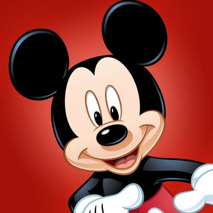

Микки Маус

Микки Маус очень дружелюбен и всегда сохраняет оптимистичный настрой, даже когда всё идёт не по плану. Он любит приключения и стремится пробовать что-то новое. Из-за своей любознательности Микки часто попадает в переделки, но всегда ловко выпутывается из них, особенно если рядом лучшие друзья — Дональд и Гуфи.
Микки Маус обожает проводить время со своей возлюбленной Минни и питомцем Плуто. Микки трудолюбив, но иногда любит и побездельничать. У него лёгкий нрав, а в трудных ситуациях он проявляет храбрость и благородство.

Минни Маус обожает петь, танцевать и красиво одеваться — она стала знаменитой на весь мир благодаря своим платьицам в горошек и лодочкам. А больше всего Минни любит проводить время со своим возлюбленным Микки.
Романтичная, милая и внимательная Минни неустанно заботится о своих друзьях и питомцах. Однако её доброта и мягкий нрав могут запросто смениться гневом, если Минни сталкивается с грубостью, самовлюблённостью или… беспорядком.

Весёлый и игривый, пёс Плуто всегда остаётся щенком в душе. Он самый преданный друг для своего хозяина Микки и просто обожает приключения. Плуто — очень умный пёс, но, как и все любопытные собаки, он часто попадает в разные переделки. Плуто знаменит своим исключительным обонянием: по запаху он может найти все, что угодно!

Когда что-то идёт не так, Дональд Дак может вспылить. Но, тем не менее, он верный друг, и у него золотое сердце. Дональд бывает слегка грубоватым, но он никогда не оставит друга в беде. А ещё он заботливый дядя троих утят-сорванцов.
В редкие моменты, когда никто и ничто не выводит Дональда из себя, он любит поваляться в гамаке и помечтать о славе и богатстве.

Дейзи Дак — лучшая подружка Минни. Она бывает немного дерзкой с окружающими, но всегда мила с теми, о ком заботится, особенно со своим другом Дональдом. Дейзи — настоящая модница, которая любит окружать себя красивыми вещами.
Иногда она ведёт себя, как легкомысленная болтушка, и это слегка утомляет её друзей. Но в ситуациях, когда это действительно необходимо, Дейзи проявляет мудрость и делает всё, что в её силах, чтобы помочь друзьям. Характер у Дейзи не менее взрывной, чем у её друга Дональда, но ей гораздо лучше удаётся держать себя в руках.

Гуфи — самый настоящий добряк. Несмотря на свою неловкость и частые ошибки, он не опускает руки и всегда старается довести до конца начатое дело. Из-за неуклюжести Гуфи часто страдают окружающие, но все его недостатки легко простить за искреннюю любовь и заботу, которыми он окружает близких (иногда против их собственной воли).
При всей своей неуклюжести Гуфи великолепный спортсмен и внимательный отец, который в одиночку справляется с воспитанием сына-подростка.

Пит — герой-антагонист, который частенько строит козни любимцу публики Микки Маусу. Пита можно увидеть во многих анимационных фильмах Disney — от легендарного «Пароходика Вилли» до современного короткометражного мультсериала «МиккиМаус».
В популярном мультсериале «Гуфи и его команда» Пит предстает в образе хитроумного и глуповатого торговца подержанными автомобилями.